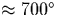
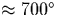

Nitrogen is commonly used as an inert atmosphere for processing Si, but it has important effects on the material. For example, N impurities can pin dislocations [161,162] and form electrically active defects such as the substitutional deep donor [163,164]. There have been suggestions that nitrogen-oxygen complexes can form shallow donors [164,165,166], although whether N forms an essential component of these defects is controversial [167,168], and this is discussed further in Chapter 8.
Nitrogen can be introduced into Si by adding Si3N4 to the melt,
annealing in an atmosphere of N2, or by implantation. N is
known to enhance O precipitation and inhibit C enhanced O
precipitation at 750 C [169]. Photoluminescence (PL)
experiments showed a decrease in oxygen precipitate strain-induced
defects in samples containing a higher N content.
C [169]. Photoluminescence (PL)
experiments showed a decrease in oxygen precipitate strain-induced
defects in samples containing a higher N content.
The principal N defect in O-free silicon is a nitrogen pair consisting
of two adjacent [100] oriented nitrogen interstitials, Ni, with
C2h symmetry (see Figure 7.1)
[145,170,145]. It is stable until about 800 C
[170]. Isolated Ni defects have also been observed (see
Section 7.3), and although substitutional Ns is a rare defect
it has been detected by EPR [171] and local vibrational
mode spectroscopy [172].
C
[170]. Isolated Ni defects have also been observed (see
Section 7.3), and although substitutional Ns is a rare defect
it has been detected by EPR [171] and local vibrational
mode spectroscopy [172].
In N and O implanted FZ-Si [173], or in Cz-Si grown in a N2
atmosphere [174,175], N-O complexes are formed by annealing
between 400 and 700 C. Under these conditions, the intensity
of the localised vibrational modes (LVMs) due to the pair are
progressively reduced and three other IR-absorption lines at 1026, 996
and 801 cm-1 (room temperature) become increasingly
prominent. The intensities of these lines are correlated with each
other [175] and they are believed to be due to NNO complexes. This
is because Oi atoms become mobile around 400
C. Under these conditions, the intensity
of the localised vibrational modes (LVMs) due to the pair are
progressively reduced and three other IR-absorption lines at 1026, 996
and 801 cm-1 (room temperature) become increasingly
prominent. The intensities of these lines are correlated with each
other [175] and they are believed to be due to NNO complexes. This
is because Oi atoms become mobile around 400 C and become
trapped by N-pair defects which are stable at this temperature. Beyond
C, these complexes break up with the emission of
Oi leaving the N-pair. Cooling allows the NNO complexes to reform.
This dissociation and reformation is reversible.
C and become
trapped by N-pair defects which are stable at this temperature. Beyond
C, these complexes break up with the emission of
Oi leaving the N-pair. Cooling allows the NNO complexes to reform.
This dissociation and reformation is reversible.